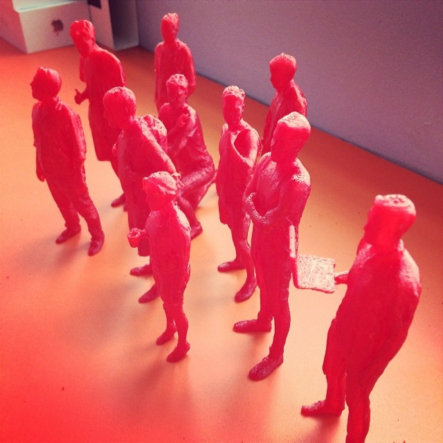

Github has an embeddable 3d model viewer that you can use to display a model on your site. The model needs to be hosted in a github repo, and the format is
<script src="https://embed.github.com/view/3d/<username>/<repo>/<ref>/<path_to_file>"></script>
Here’s a model of me that we made using the Structure 3d scanner which is a fun device that plugs into your iPhone or iPad.
Pretty fun right?
The next thing you need to do is to get a 3d printer, so you can create action figures for your office.

End.